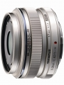

该镜头采用了与M.ZD ED 12/2相同的“快照“对焦技术，并且拥有比2009年推出的M.ZD 17/2.8更大的光圈值。另外，搭载了MSC技术实现了超高速静音自动对焦，适用于动态视频拍摄时迅速、安静对焦。
M43 最值得拥有的挂机头，价格适中，坐拥34mm 黄金人文视角 目前价格已经不到3K。这个人文焦段必须的选择。F5.6最佳光圈。
对焦块而准，MSC非常安静， 手感不错，外形亮骚，画质不敢说一流，但也非常棒了。有人说不如20 1.7的画质，但是综合外形和材质以及对焦速度，还是1718最好。 虚化程度刚刚好，既不会太夸张，也有一些。基本全身人像也可以得到可以接受的浅景深，不会像全副35 F2以下那几款，背景一下全部虚的看不出来了。
不是大眼睛，正面不好看， 对焦环有点送， 镜头在安静环境下有时有咔咔声，不过没有251.4那么严重。 颜色配银色EM5不太和谐。 原厂配件价格简直是坑爹！！！
挺好的蛋糕头 M43的人文之眼 值得拥有
对焦快且准 对焦环MF手感很棒 超过一些德产老头 镜头做工很好 金属镜身 光圈够给力 锐度不错
焦外不是很好 有点乱 遮光罩单卖很坑爹